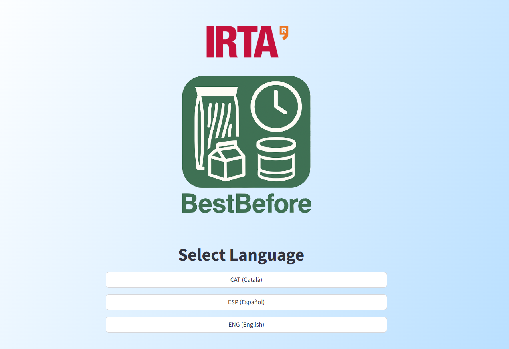

Benvingut/a al meu Portfoli!
Benvingut/a al meu Portfoli!

Hola, sóc la Cristina Recasens. Tinc un grau superior en Desenvolupament d’Aplicacions Multiplataforma i formació en desenvolupament d’apps i anàlisi de dades. També sóc biòloga amb un màster en Ecologia Terrestre i Gestió de la Biodiversitat, on vaig aprendre estadística i modelització amb R i QGiS (UAB).
Des de sempre m’han apassionat la ciència, les matemàtiques i la informàtica, cosa que m’ha portat a tenir un perfil interdisciplinari. M’encanta veure com una idea cobra vida a la pantalla i descobrir connexions inesperades entre dades.
Tinc un any d’experiència en Python i coneixements sòlids en Java i SQL. M’agraden els reptes i aprendre constantment, i tinc molta facilitat per adaptar-me!
Creus que encaixo? Pots trobar aquí el meu currículum. Parlem!
Desenvolupadora d’una aplicació per a l’IRTA (Institut de Recerca Agroalimentària) on, a través d’una sèrie de preguntes, la introducció de dades per part de l’usuari i l’aplicació posterior d’anàlisis estadístics, es pot fer un ajust aproximat de la data de consum preferent del menjar.
Disseny, programació i desplegament del portfoli de la fotoperiodista Maria Limeres, utilitzant HTML, CSS i JavaScript.

 Demo
Demo
Joc senzill inspirat en FlappyBirds que consisteix a recollir els núvols blancs i esquivar les tempestes. Quants punts pots fer? Tens l’apk i el codi disponibles al meu GitHub.
 Demo
Demo
Anàlisi de dades estadístics utilitzant QGiS i R per a determinar dinàmiques de la població del porc senglar a Collserola i la ciutat de Barcelona.
 Docs
Docs
Python
Java
JavaFX
MySQL
Postgres
Kotlin
Android Studio
HTML5
CSS
JavaScript
PHP
R
QGIS
Matplotlib
NumPy
Pandas
Streamlit
GitHub
Office
Setembre 2023 - Actualitat
Cicle formatiu de grau superior en Desenvolupament d’aplicacions multiplataforma a l’Institut de Palamós. He après desenvolupament d’aplicacions amb Java, Python i Kotlin. A més d’aprendre llenguatges de bases de dades com MySQL o PostgreSQL.
Setembre 2016 - Setembre 2017
Màster d’estudis estadístics i modelització aplicats a la gestió de la biodiversitat. Gràcies a aquest Màster he adquirit una base sòlida d’estadística i modelització a través de l’aplicació de diferents models i eines (com R i QGiS).
Setembre 2011 - Juny 2015
Grau universitari en Biologia general, que m’ha donat un ampli coneixement sobre diferents temes relacionats amb la vida i la ciència. On vaig fer estudis de bioinformàtica, estadística i matemàtiques.